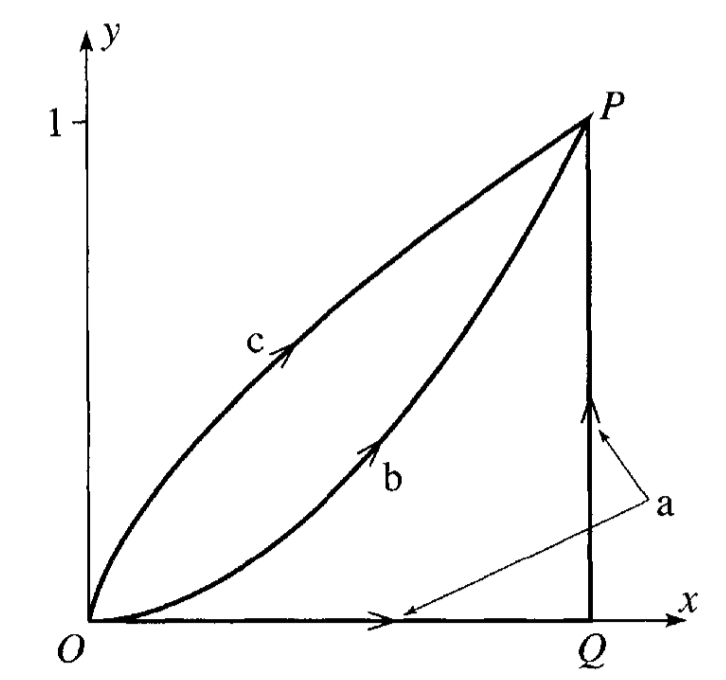
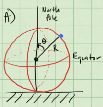
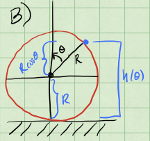
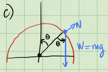
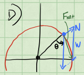
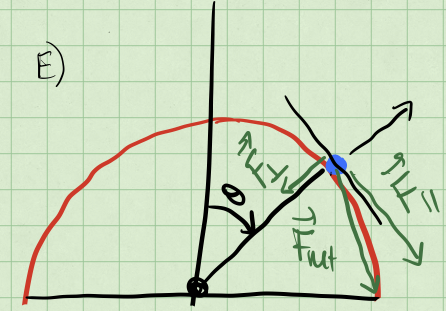
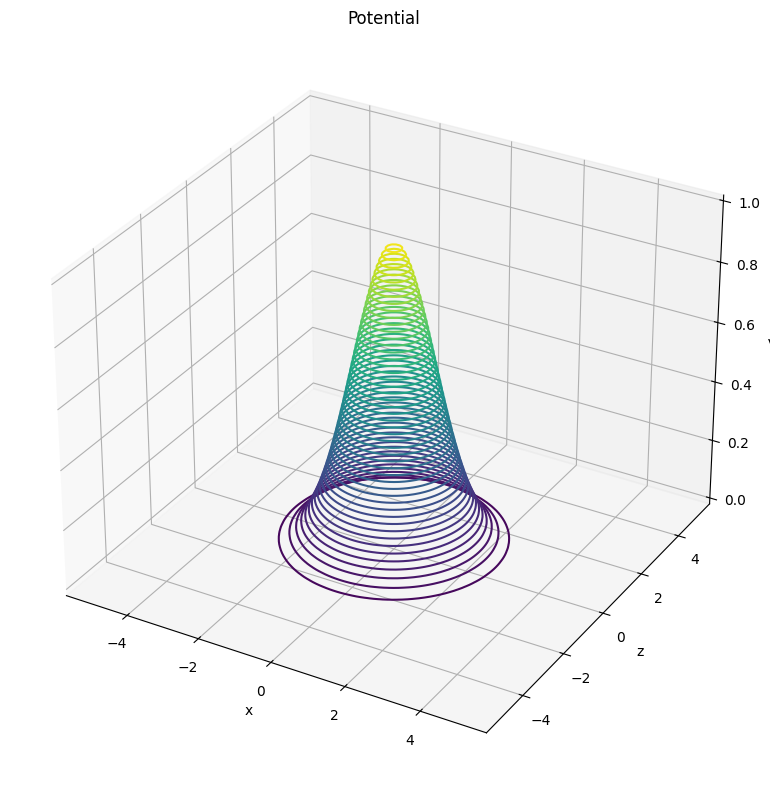
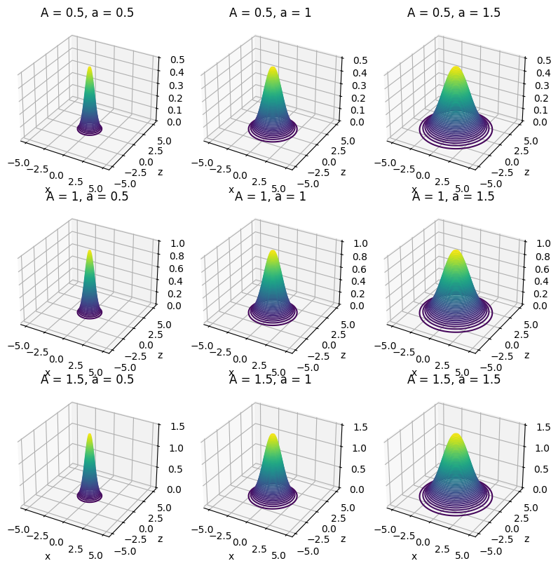
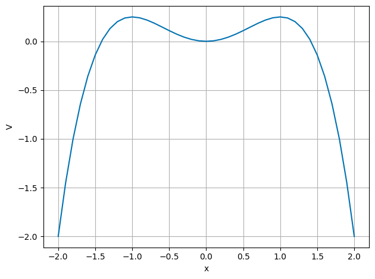
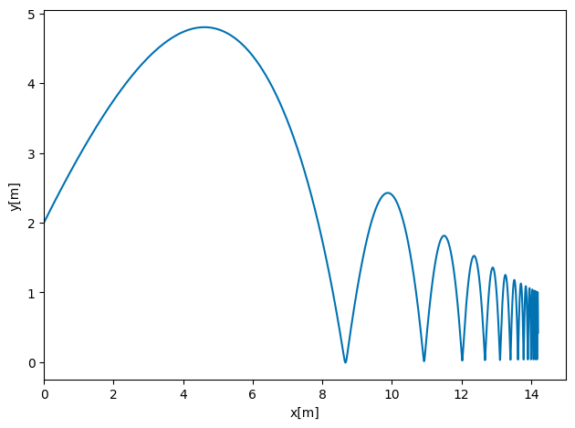

Solution Homework 4#
Spring 2025
Exercise 1 (15 pts), Is this a conservative force?#
Consider a particle of mass \(m\) moving in two dimensions. The particle moves from \((0,0)\) to \((1,1)\) along three different paths, \(a\), \(b\) and \(c\) as shown in the figure below.

In this space, the particle experiences a force:
1a (3pt) Calculate the work done by the along path \(a\), which is a straight line from \((0,0)\) to \((1,0)\), and then to \((1,1)\). Break the path into two segments and calculate the work done along each segment separately.
Solution
We follow the suggestion and break the integral into two parts. The first part is from \((0,0)\) to \((1,0)\) and the second part is from \((1,0)\) to \((1,1)\).
The work done by the force along a path is given by the line integral:
where \(d\vec{r} = dx\hat{i} + dy\hat{j}\) in general. But, by breaking the path into two segments, we can write the work done along each segment as:
where \(C_1\) is the path from \((0,0)\) to \((1,0)\) and \(C_2\) is the path from \((1,0)\) to \((1,1)\), and thus \(d\vec{r}_1 = dx\hat{i}\) and \(d\vec{r}_2 = dy\hat{j}\) because that is the direction of the path in each case. So the work integral becomes:
1b (3pt) Calculate the work done by the force along path \(b\), which follows the function \(y = x^2\) from \((0,0)\) to \((1,1)\).
Solution
The work done by the force along path \(b\) is given by the same line integral formula as before:
where \(d\vec{r} = dx\hat{i} + dy\hat{j}\) in general. But in this case, we can write the differential fully in terms of \(x\):
because we are following the path \(y = x^2\). We can use the substitution \(y = x^2\) to write the force also in terms of \(x\):
And thus the work integral becomes:
1c (4pt) Calculate the work done by the force along path \(c\), which is given parametrically by \(x = t^3\) and \(y = t^2\) from \((0,0)\) to \((1,1)\).
Solution
In this final case, we can rewrite the differentials and the force in terms of \(t\):
And thus the work integral becomes:
1d (5pt) Is this force conservative? Explain your answer in at least two ways.
Solution
The results of parts a-c show that the work done by the force is different along different paths. This is a clear indication that the force is not conservative.
With a force given by \(\vec{F} = x^2\hat{i} + 2xy\hat{j}\), we can also check if it is conservative by checking if the curl of the force is zero. The curl of this 2D vector field is given by:
And so we calculate the curl of this force:
Exercise 2 (10 pt), Sliding puck#
A small puck rests on a fixed sphere of radius \(R\). The puck is given a tiny nudge and it slides down the sphere. Using conservation of energy, we can determine the point at which the puck leaves the sphere.
2a (3pt) Setup the problem with a sketch. Explain the setup and include any assumptions that you need to make in order to solve the problem analytically. Identify the height as a function of the polar angle, \(h(\theta)\). What is the maximum possible angle \(\theta\) that the puck could reach before falling off? Why?
Solution
The figure below shows the setup at a given time. Here we have chosen the puck to be a point particle, such that it only translates and its kinetic energy is much simpler. We also assume the travel of the puck is completely azimuthal (i.e., it falls in a line the meets the equator perpendicularly).

From the figure you can see we choose the angle \(\theta\) as the polar angle, and measure it from the vertical axis (i.e., the North Pole).
This also gives us a useful definition for the height in terms of the polar angle. In the sketch below, we show how you can find this relationship using the ground as the location of \(h=0\).

From this, we see that \(h(\theta) = R + R\cos \theta\), this becomes useful later. From any of these figures, it should be clear once the puck reaches the equator, it will fall off. So any answer we should have must be such that:
2b (2pt) Use conservation of energy to find the speed of the puck as a function of it’s height. Your answer should be in terms of the polar angle, \(\theta\).
Solution
With the assumptions that the puck is a frictionless point particle, we know that the focus will be on the kinetic energy of the particle. The change in potential energy of the Earth puck system is what provides kinetic energy. We write the conservation of energy
The height of the puck is given by the location along the line it slides by the following:
where \(\theta\) is the angle between the vertical and the location of the puck on the sphere as shown in part a. We choose the ground as \(U=0\), so that the potential energy of the puck is given by \(U = mgh\). The potential energy of the puck is then given by:
2c (3pt) Use Newton’s Second Law to find the normal force acting on the puck as a function of it’s height. Your answer should be in terms of the polar angle, \(\theta\). What is the condition for the puck to leave the sphere?
Solution
At the location shown the puck is moving along a circular path, but speeding up as it does so. There are only two forces acting on the puck: the gravitational force \(-mg\hat{j}\) and the normal force \(\vec{N}\). The vector sum of these two forces must equal to the net force at that instant.
We know that the normal force is perpendicular to the surface of the sphere. There is also a component of the gravitational force that is perpendicular to the surface of the sphere at the location of the puck. See the sketch below.


We can write the component of that net force that is perpendicular to the surface of the sphere as:
Because the puck is moving in a circular arc, there is a component of net force that is directed towards the center of the sphere. We can write that component of the net force as:
where the minus sign stems from the fact that this component of the net force, the centripetal force, points inward.

And thus the normal force is given by:
where \(v\) is the speed of the puck at that instant. We can get that speed from conservation of energy. This speed can be written in terms of the angle \(\theta\). Starting from energy conservation, we have:
where we started at the top of the sphere and \(\theta = 0\) at rest. We can solve for \(v\) as a function of \(\theta\).
At the moment the puck leaves the sphere, the normal force is zero. We can use this to find the condition for the puck to leave the sphere.
From this equation, we obtain a different relation between the speed of the puck and the angle \(\theta\).
Thus we set our two expressions for \(v^2\) equal to each other and solve for \(\theta\).
2d (2pt) At what height does the puck leave the sphere?
Solution
From our definition of the height of the puck in terms of the angle \(\theta\), we can find the height at which the puck leaves the sphere.
The condition was used in part c, the puck leaves the sphere when the normal force is zero.
Exercise 3 (10pt), Example of potential#
Consider a particle of mass \(m\) moving according to the potential:
We can think of this potential as the energy landscape of a particle in three dimensions. That is, you can imagine a particle moving around this potential like a ball rolling around a landscape. That analogy is not perfect, but it is a good way to help us think about stability and equilibrium.
3a (2pt) Plot this potential or sketch a plot of it. You can use perspective plots, contour plots or any other plot you find useful.
import numpy as np
import matplotlib.pyplot as plt
from mpl_toolkits.mplot3d import Axes3D
plt.style.use('seaborn-v0_8-colorblind')
def V(x,z,A=1,a=1):
return A*np.exp(-(x**2+z**2)/(2*a**2))
x = np.linspace(-5,5,100)
z = np.linspace(-5,5,100)
X,Z = np.meshgrid(x,z)
V = V(X,Z)
fig = plt.figure(figsize=(8,8))
ax = plt.axes(projection='3d')
ax.contour3D(X, Z, V, 50, cmap='viridis')
ax.set_title('Potential')
ax.set_xlabel('x')
ax.set_ylabel('z')
ax.set_zlabel('V')
plt.tight_layout()
plt.show()

3b (2pt) What are some feature you notice with this potential? What happens when you change \(A\) and \(a\)?
import numpy as np
import matplotlib.pyplot as plt
from mpl_toolkits.mplot3d import Axes3D
plt.style.use('seaborn-v0_8-colorblind')
def V(x, z, A=1, a=1):
return A * np.exp(-(x**2 + z**2) / (2 * a**2))
x = np.linspace(-5, 5, 100)
z = np.linspace(-5, 5, 100)
X, Z = np.meshgrid(x, z)
## Choices of A and a
params = {
'A': [0.5, 1, 1.5],
'a': [0.5, 1, 1.5]
}
## Create a figure with 3x3 subplots
fig, axs = plt.subplots(3, 3, figsize=(8, 8), subplot_kw={'projection': '3d'})
## Loop over the parameters
for i, A in enumerate(params['A']):
for j, a in enumerate(params['a']):
V_values = V(X, Z, A, a)
ax = axs[i, j]
ax.contour3D(X, Z, V_values, 50, cmap='viridis')
ax.set_title(f'A = {A}, a = {a}')
ax.set_xlabel('x')
ax.set_ylabel('z')
ax.set_zlabel('V')
plt.tight_layout() # Adjust layout to prevent overlap
plt.show()

Solution
We can see that the potential is centered around the origin and that it decreases as we move away from the origin. The potential is also symmetric around the vertical axis. Changing \(A\) increases the height of the potential, while changing \(a\) changes the width of the potential. The larger \(A\) is the higher the maximum of the potential, while the larger \(a\) is the wider the potential.
3c (2pt) Imagine a particle moving in this potential, what are some expected trajectories?
Solution
The particle would move away from the origin and never return. It’s possible to have tranjectories inbound to the center, but without sufficient energy, the particle will not be able to overcome the potential barrier and would return out to the edge of the potential.
3d (2pt) Do there appear to be any equilibrium points? If so, are they stable or unstable?
Solution
The origin is an equilibrium point. We can see that the potential is at a maximum there and the potential decreases as we move away from the origin. This means that the origin is an unstable equilibrium point.
3a (2pt) Is the resulting force conservative? Why?
Solution
With a potential given by \(V(x,y,z)=A\exp\left\{-\frac{x^2+z^2}{2a^2}\right\}\), so yes the resulting force will be conservative because we started from a potential dependent only on position. We can determine that force by taking the gradient of the potential.
Exercise 4 (15pt), forces and potentials#
A particle of mass \(m\) has velocity \(v=\alpha/x\), where \(x\) is its displacement.
5a (5pt) Find the force \(F(x)\) responsible for the motion.
SOLUTION
Here, since the force is assumed to be conservative (only dependence on \(x\)), we can use energy conservation. Assuming that the total energy at \(t=0\) is \(E_0\), we have
Taking the derivative wrt \(x\) we have
and since \(F(x)=-dV/dx\) we have
A particle is thereafter under the influence of a force \(F=-kx+kx^3/\alpha^2\), where \(k\) and \(\alpha\) are constants and \(k\) is positive.
5b (5pt) Determine the potential \(U(x)\) and discuss the motion. It can be convenient here to make a sketch/plot of the potential as function of \(x\).
SOLUTION
We assume that the potential is zero at say \(x=0\). Integrating the force from zero to \(x\) gives
The following code plots the potential. We have chosen values of \(\alpha=k=1.0\). Feel free to experiment with other values. We plot \(V(x)\) for a domain of \(x\in [-2,2]\).
import numpy as np
import matplotlib.pyplot as plt
plt.style.use('seaborn-v0_8-colorblind')
x0= -2.0
xn = 2.1
Deltax = 0.1
alpha = 1.0
k = 1.0
#set up arrays
x = np.arange(x0,xn,Deltax)
n = np.size(x)
V = np.zeros(n)
V = 0.5*k*x*x-0.25*k*(x**4)/(alpha*alpha)
plt.plot(x, V)
plt.xlabel("x")
plt.ylabel("V")
plt.grid()
plt.tight_layout()
plt.show()

SOLUTION CONT’D
From the plot here (with the chosen parameters)
we see that with a given initial velocity we can overcome the potential energy barrier
and leave the potential well for good.
If the initial velocity is smaller (see next exercise) than a certain value, it will remain trapped in the potential well and oscillate back and forth around \(x=0\). This is where the potential has its minimum value.
If the kinetic energy at \(x=0\) equals the maximum potential energy, the object will oscillate back and forth between the minimum potential energy at \(x=0\) and the turning points where the kinetic energy turns zero. These are the so-called non-equilibrium points.
5c (4pt) What happens when the energy of the particle is \(E=(1/4)k\alpha^2\)? Hint: what is the maximum value of the potential energy?
SOLUTION
From the figure we see that the potential has a minimum at at \(x=0\) then rises until \(x=\alpha\) before falling off again. The maximum potential, \(V(x\pm \alpha) = k\alpha^2/4\). If the energy is higher, the particle cannot be contained in the well. The turning points are thus defined by \(x=\pm \alpha\). And from the previous plot you can easily see that this is the case (\(\alpha=1\) in the aforementioned Python code).
Exercise 5 (10pt), Midterms and Final Project Preparation#
Your final project will be a computational essay of your own design. My colleague, Tor Ole Odden, and I have borrowed this idea from a proposal by Stephen Wolfram. In his original post, Wolfram talks about the importance of the computational medium as a way of communicating science.
Tor, myself, and others have started building this idea into a theory of computational learning in physics, using computational essays to argue for the importance of computing in physics, building the theory out, and trying to identify the ways making course work and materials to promote agency, creativity, and ownership.
In this homework question, we are going to start building your plan for your computational essay. I ask that you complete this particular homework problem by yourself because it is important for each of you to do this planning.
To get started, you should read the following articles; they are not very long:
Wolfram’s What is a Computational Essay?
Tor and my short paper: Computational Essays: An Avenue for Scientific Creativity in Physics
Wolfram’s Steps to Writing a Computational Essay
You are, of course, welcome to read more, but these are the three that I would like you to read.
5a (3pt) Write a summary of your readings. What did you learn? What was important? What did you find interesting? What questions do you still have? Full credit will be given for a summary that is at least 250 words long.
Computational essays are a new way to communicate your science. It might be a good idea to look at some examples. Review the University of Oslo’s Computational Essay Showroom.
5b (3pt) Find at least one computational essay in the showroom that you find interesting. Write a summary of the computational essay. What did you like? What did you not like? What was interesting about it? What questions do you still have? Full credit will be given for a summary that is at least 250 words long.
These essays were made by students who were taking a course at the University of Oslo. The essays are not meant to be perfect, they are meant to be representative of the work that students can do.
5c (3pt) Evaluate the computational essay based on your readings in 5a. How well does the computational essay follow the concept of physics computational literacy, or the guidelines for a good essay? What are the strengths and weaknesses of the computational essay? Full credit will be given for a summary that is at least 250 words long.
Now, let’s move to your future plans.
5d (1pt) Write a short paragraph about the things you are interested in studying for your computational essay. This can be a very short paragraph, but it should include at least one image or plot that you find interesting. This can be starting from the homework, the samples in the showroom, or something else entirely.
Exercise 6 (40pt), Bouncing object#
This exercise builds on the code you wrote for solving homework 3. We recommend strongly that you study the text of Malthe-Sørenssen, section 7.5.
In homework 3 we introduced gravity and air resistance and studied their effects via a constant acceleration due to gravity and the force arising from air resistance. But what happens when the ball hits the floor? What if we would like to simulate the normal force from the floor acting on the ball? This exercise shows how we can include more complicated forces with no pain! And the force we include here is an example of a case where analytical solutions may either be difficult to find or we cannot find an analytical solution at all.
We need then to include a force model for the normal force from the floor on the ball. The simplest approach to such a system is to introduce a contact force model represented by a spring model. We model the interaction between the floor and the ball as a single spring. But the normal force is zero when there is no contact. Here we define a simple model that allows us to include such effects in our models.
The normal force from the floor on the ball is represented by a spring force. This is a strong simplification of the actual deformation process occurring at the contact between the ball and the floor due to the deformation of both the ball and the floor.
The deformed region corresponds roughly to the region of overlap between the ball and the floor. The depth of this region is \(\Delta y = R − y(t)\), where \(R\) is the radius of the ball. This is supposed to represent the compression of the spring. Our model for the normal force acting on the ball is then
The normal force must act upward when \(y < R\), hence the sign must be negative. However, we must also ensure that the normal force only acts when the ball is in contact with the floor, otherwise the normal force is zero. The full formation of the normal force is therefore
when \(y(t) < R\) and zero when \(y(t) \le R\). In the numerical calculations you can choose \(R=0.1\) m and the spring constant \(k=1000\) N/m.
6a (10pt) Identify the forces acting on the ball and set up a diagram with the forces acting on the ball. Find the acceleration of the falling ball now with the normal force as well.
SOLUTION
For 6a, see Malthe-Sørenssen chapter 7.5.1, in particular figure 7.10. The forces are in equation (7.10). The following code shows how to set up the problem with gravitation, a drag force and a normal force from the ground. The normal force makes the ball bounce up again.
6b (30pt) Choose a large enough final time so you can study the ball bouncing up and down several times. Add the normal force and compute the height of the ball as function of time with and without air resistance. Comment your results.
SOLUTION
The code here includes all forces. Commenting out the air resistance will result in a ball which bounces up and down to the same height. Furthermore, you will note that for larger values of \(\Delta t\) the results will not be physically meaningful. Can you figure out why? Try also different values for the step size in order to see whether the final results agrees with what you expect.
# Exercise 6, hw4, smarter way with declaration of vx, vy, x and y
# Here we have added a normal force from the ground
# Common imports
import numpy as np
import pandas as pd
from math import *
import matplotlib.pyplot as plt
import os
# Where to save the figures and data files
PROJECT_ROOT_DIR = "Results"
FIGURE_ID = "Results/FigureFiles"
DATA_ID = "DataFiles/"
if not os.path.exists(PROJECT_ROOT_DIR):
os.mkdir(PROJECT_ROOT_DIR)
if not os.path.exists(FIGURE_ID):
os.makedirs(FIGURE_ID)
if not os.path.exists(DATA_ID):
os.makedirs(DATA_ID)
def image_path(fig_id):
return os.path.join(FIGURE_ID, fig_id)
def data_path(dat_id):
return os.path.join(DATA_ID, dat_id)
def save_fig(fig_id):
plt.savefig(image_path(fig_id) + ".png", format='png')
from pylab import plt, mpl
plt.style.use('ggplot')
mpl.rcParams['font.family'] = 'serif'
# Define constants
g = 9.80655 #in m/s^2
D = 0.0245 # in mass/length, kg/m
m = 0.2 # in kg
R = 0.1 # in meters
k = 1000.0 # in mass/time^2
# Define Gravitational force as a vector in x and y, zero x component
G = -m*g*np.array([0.0,1])
DeltaT = 0.001
#set up arrays
tfinal = 15.0
n = ceil(tfinal/DeltaT)
# set up arrays for t, v, and r, the latter contain the x and y comps
t = np.zeros(n)
v = np.zeros((n,2))
r = np.zeros((n,2))
# Initial conditions
r0 = np.array([0.0,2.0])
v0 = np.array([10.0,10.0])
r[0] = r0
v[0] = v0
# Start integrating using Euler's method
for i in range(n-1):
# Set up forces, air resistance FD
if ( r[i,1] < R):
N = k*(R-r[i,1])*np.array([0,1])
else:
N = np.array([0,0])
vabs = sqrt(sum(v[i]*v[i]))
FD = -D*v[i]*vabs
Fnet = FD+G+N
a = Fnet/m
# update velocity, time and position
v[i+1] = v[i] + DeltaT*a
r[i+1] = r[i] + DeltaT*v[i]
t[i+1] = t[i] + DeltaT
fig, ax = plt.subplots()
ax.set_xlim(0, tfinal)
ax.set_ylabel('y[m]')
ax.set_xlabel('x[m]')
ax.plot(r[:,0], r[:,1])
fig.tight_layout()
save_fig("BouncingBallEuler")
plt.show()
# Exercise 6, hw4, smarter way with declaration of vx, vy, x and y
# Here we have added a normal force from the ground
# Common imports
import numpy as np
import pandas as pd
from math import *
import matplotlib.pyplot as plt
import os
# Where to save the figures and data files
PROJECT_ROOT_DIR = "Results"
FIGURE_ID = "Results/FigureFiles"
DATA_ID = "DataFiles/"
if not os.path.exists(PROJECT_ROOT_DIR):
os.mkdir(PROJECT_ROOT_DIR)
if not os.path.exists(FIGURE_ID):
os.makedirs(FIGURE_ID)
if not os.path.exists(DATA_ID):
os.makedirs(DATA_ID)
def image_path(fig_id):
return os.path.join(FIGURE_ID, fig_id)
def data_path(dat_id):
return os.path.join(DATA_ID, dat_id)
def save_fig(fig_id):
plt.savefig(image_path(fig_id) + ".png", format='png')
from pylab import plt, mpl
plt.style.use('seaborn-v0_8-colorblind')
# Define constants
g = 9.80655 #in m/s^2
D = 0.0245 # in mass/length, kg/m
m = 0.2 # in kg
R = 0.1 # in meters
k = 1000.0 # in mass/time^2
# Define Gravitational force as a vector in x and y, zero x component
G = -m*g*np.array([0.0,1])
DeltaT = 0.001
#set up arrays
tfinal = 15.0
n = ceil(tfinal/DeltaT)
# set up arrays for t, v, and r, the latter contain the x and y comps
t = np.zeros(n)
v = np.zeros((n,2))
r = np.zeros((n,2))
# Initial conditions
r0 = np.array([0.0,2.0])
v0 = np.array([10.0,10.0])
r[0] = r0
v[0] = v0
# Start integrating using Euler's method
for i in range(n-1):
# Set up forces, air resistance FD
if ( r[i,1] < R):
N = k*(R-r[i,1])*np.array([0,1])
else:
N = np.array([0,0])
vabs = sqrt(sum(v[i]*v[i]))
FD = -D*v[i]*vabs
Fnet = FD+G+N
a = Fnet/m
# update velocity, time and position
v[i+1] = v[i] + DeltaT*a
r[i+1] = r[i] + DeltaT*v[i]
t[i+1] = t[i] + DeltaT
fig, ax = plt.subplots()
ax.set_xlim(0, tfinal)
ax.set_ylabel('y[m]')
ax.set_xlabel('x[m]')
ax.plot(r[:,0], r[:,1])
fig.tight_layout()
save_fig("BouncingBallEuler")
plt.show()
